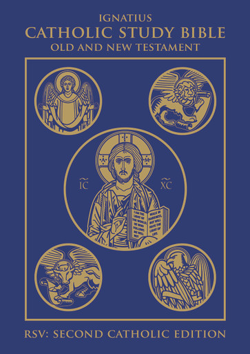
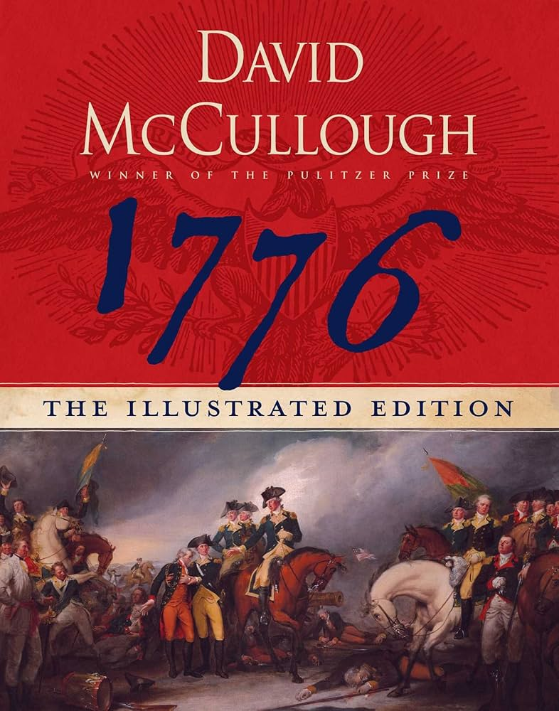
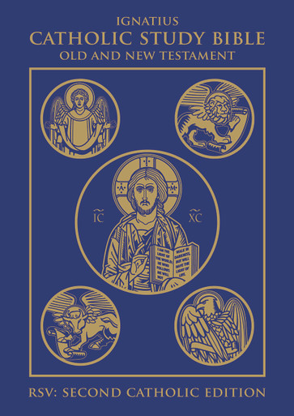
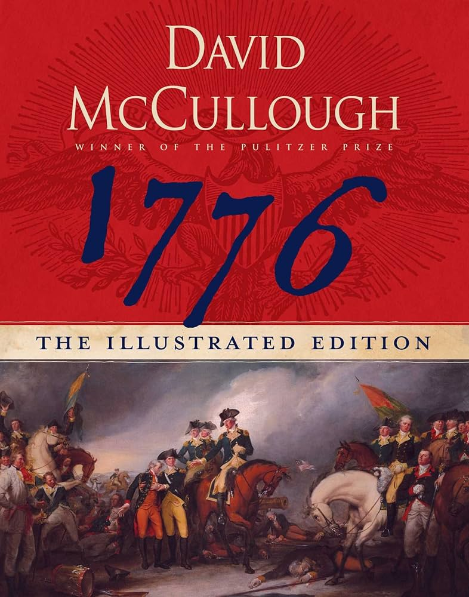

E-Readers and Their Magic

E-readers have been around for quite some time and are a perfect tool for anyone starting to read or passionate readers.
Outside of academic obligations, I never truly felt inclined to read for pleasure.
That being said, one day I decided to give reading another chance. I had always been searching for new ways to enjoy my hobbies, but I frequently found it difficult to stay concentrated and motivated. At the time, most of my free time was spent on movies, video games, and occasional computer or programming activities. While enjoyable, these pursuits often felt unbalanced—some taking more of my time than they should have, and few offering the sense of productivity or depth I longed for.
Despite my past difficulties, I finally committed to trying reading again—and I am so grateful that I did, because it has completely transformed my life. I had always kept a mental list of books and ideas I was curious about, so I began with something accessible: the Harry Potter series by J.K. Rowling. Even at my age, it proved to be an amazing experience, offering rich stories that kept me engaged for hours.
Gradually, I moved on to more challenging works, like 1984 by George Orwell. Tackling books with higher-level language and complex themes had once seemed impossible to me, but this time, I was able to read them from beginning to end.
My interests then expanded to other genres, including history books and articles. Ultimately, this journey led me to finally approach the most precious book in my collection: the Bible. As a devout Catholic, I had always wished to read scripture, but I had been intimidated by its length and complexity. Building a daily reading habit, starting with simpler texts, and engaging in conversations with other readers gave me the confidence and understanding I needed. Now, I am able to approach both scripture and literature as a whole in a profoundly deeper way than ever before.
E-readers have been around for quite some time and are a perfect tool for anyone starting to read or passionate readers.
 


